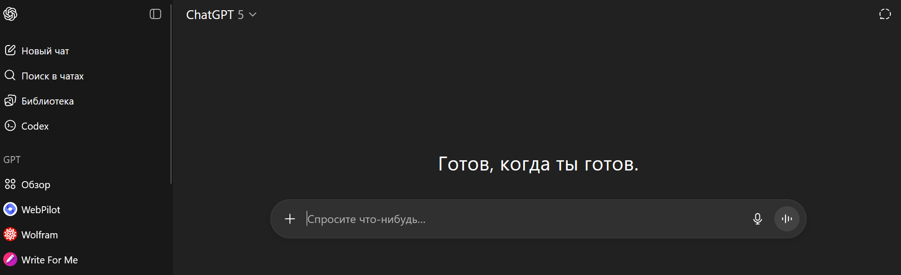
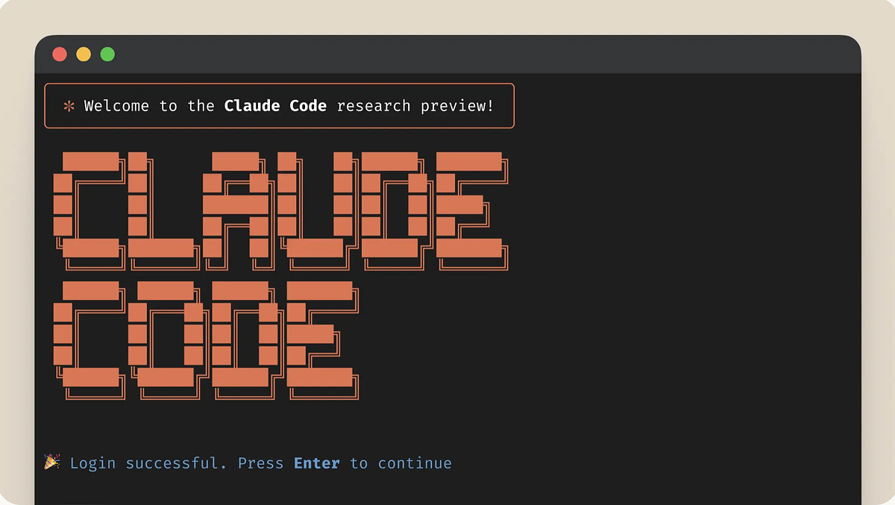
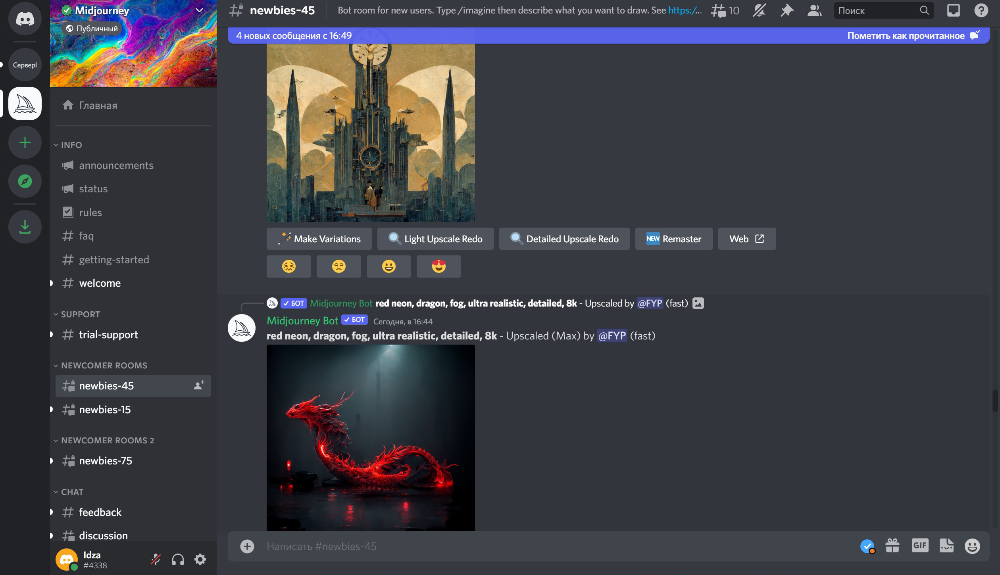
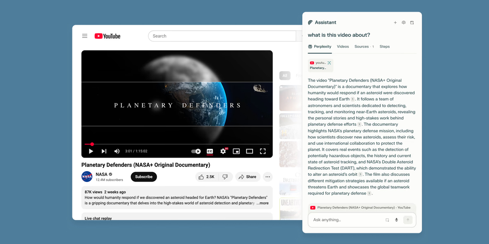
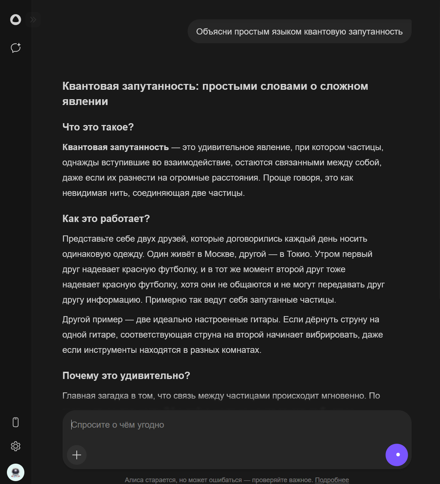

Массовая волна интереса к генеративному ИИ стартовала в конце 2022
года с запуском ChatGPT — за два месяца сервис достиг ~100 млн MAU и
стал самым быстрорастущим потребительским приложением в истории. Это
стало видимым «щелчком», но ему предшествовал длинный путь:
появление трансформеров, масштабирование моделей и методы обучения с
человеческой обратной связью.
Что было до «щелчка»
Трансформер-архитектура (2017) упростила и
ускорила обучение языковых моделей, заменив рекуррентные сети
механизмом внимания.
Законы масштабирования (2020) показали, что
качество LLM закономерно растёт с увеличением данных, параметров
и вычислений.
RLHF и Instruct-подход (2022) научили модели
следовать инструкциям и желаниям пользователя, сделав
взаимодействие полезнее и безопаснее.
Полезность «из коробки»: от объяснений и резюме
до кода и таблиц.
Эффект экосистемы: интеграции в поиск, офисные
пакеты и браузеры.
Итог
«Рассвет» был не случайностью, а результатом нескольких
технологических волн — от архитектуры до выверенного обучения и
масштабов. ChatGPT лишь сделал это очевидным всем.

Именно с этого окна большинство познакомилось с LLM
Агенты кода
Идея «написать код с помощью LLM» эволюционирует от автодополнения к
coding agents — автономным помощникам, которые читают
репозиторий, запускают тесты, вносят правки и объясняют свои
решения.
От подсказок к агентам
IDE-ассистенты открыли эру ИИ-подсказок в
редакторе.
Copilot Workspace/Agent добавили планирование
задач, выполнение шагов и рабочую среду «от идеи до PR» в
естественном языке.
Автономные агенты (Devin и open-source
OpenHands) демонстрируют сценарии «поставил задачу — получил
изменения в коде», опираясь на бенчмарки вроде SWE-bench.
Популярные решения
GitHub Copilot (Agent/Workspace): формулируете
цель — агент запускает VM, анализирует код, правит, пишет
пояснения.
Devin (Cognition): позиционируется как «первый
ИИ-инженер», работает инструментально (shell, браузер,
редактор).
Бенчмарки семейства SWE-bench проверяют, умеет ли
агент решать реальные GitHub-issues и проходить тесты — ближе к
задачам индустрии, чем классические NLP-метрики.
Практический вывод
В ближайшие релизы IDE и платформ всё чаще включают «агентные»
режимы: не только писать код, но и планировать, запускать и
проверять. Роль разработчика смещается в сторону постановки задач,
ревью и системного дизайна.

Большинство инженеров, активно использующих агенты, предпочитают
их CLI-версии
За пределами текста
Генеративный ИИ давно вышел за рамки текста. Пользователи создают
изображения, музыку и видео, а крупные студии и сервисы строят
вокруг этого новые рабочие процессы.
Изображения
Stable Diffusion / SDXL: открытая экосистема и
промышленное качество.
Adobe Firefly: генерация прямо в
Photoshop/Express с акцентом на лицензирование и
ответственность.
Видео
OpenAI Sora (Sora 2): фотореалистичные клипы и
растущие меры контроля IP.
Runway Gen-3: фокус на управляемости и
производственном пайплайне.
Pika: быстрые стилизованные ролики для
соцсетей.
Stable Video Diffusion: открытый стек для видео
на базе диффузии.
Аудио и музыка
ElevenLabs: TTS/дубляж/ASR для продакшн-задач и
API-интеграций.
Suno и Udio: генерация треков с вокалом,
расширенные студийные режимы.
Тенденции
Профессионализация: связки «генерация → монтаж
→ лицензирование» входят в инструменты индустрии.
IP & право: появляются новые механизмы контроля
прав и монетизации для правообладателей.
Доступность: всё больше возможностей прямо в
веб-сервисах и мобильных приложениях.

Некоторые сервисы перестали быть нишевыми и обросли коммерческим
лоском
В каждом уголке нашей жизни
ИИ-агенты постепенно «врастают» в привычные интерфейсы — поиск,
почту, офис, браузер и смартфон — и меняют способ взаимодействия с
интернетом: от набора запросов к постановке задач.
Поиск и ответы
Google AI Overviews: показ кратких ответов над
ссылками, раскатка на сотни миллионов пользователей и 100+
стран.
Perplexity: «answer engine» с цитируемыми
источниками и быстрыми сводками.
Офис и рабочий стол
Microsoft Copilot: единый помощник в Windows
11, Edge и Microsoft 365; расширения для планирования,
редактирования, презентаций.
Apple Intelligence: системные инструменты
письма, приоритизации уведомлений, мультимодальности на
iOS/macOS.
Агентные браузеры
Новые браузеры экспериментируют с «агентным» серфингом: навигация
и действия на страницах выполняются автоматически по задаче
пользователя.
Что это меняет
От ключевых слов — к задачам: «собери
сводку/забронируй/сгенерируй документ».
Контекст и персонализация: агенты привлекают
ваши файлы и историю действий.
Ответственность и верификация: растёт роль
прозрачных источников и ручной проверки.

Они делают ревью видео, заказывают авиа-билеты и строят
туристические маршруты. Может быть через пару лет я буду
разрабатывать сервисы для ИИ, а не для людей?
А что же в России
Российская ИИ-индустрия быстро формирует собственные стеки: крупные
экосистемы развивают LLM, голос, изображения и внедрения в продукты.
Ключевые игроки и модели
Сбер / GigaChat: линейка LLM и API, SDK для
интеграций; развитие мультимодальности и офисных сценариев.
Яндекс / YandexGPT: поколение 5/5.1 Pro в
продуктах и API; «Алиса» нового поколения на базе YandexGPT.
Kandinsky (Сбер): генерация изображений и
анимации (в т.ч. быстрый режим Flash) в вебе и приложениях.
MTS AI: платформенные решения для бизнеса и
ассистенты, включая dev-агента Kodify 2.
Инфраструктура и экосистема
Сколково: координация и пилоты для внедрения ИИ
в отраслях, грантовые программы и отраслевые мероприятия.
Отраслевые конференции: профильные треки
крупнейших тех-ивентов (напр., GigaConf).
Текущие тренды
Интеграции в массовые продукты: умные
колонки/ТВ, офис и поиск.
Фокус на локальном рынке: совместимость с
отечественной ИТ-инфраструктурой и API.
Рост прикладных кейсов: контакт-центры,
документооборот, маркетинг, код-ассистенты.

Помню времена когда она даже погоду нормально сказать не могла